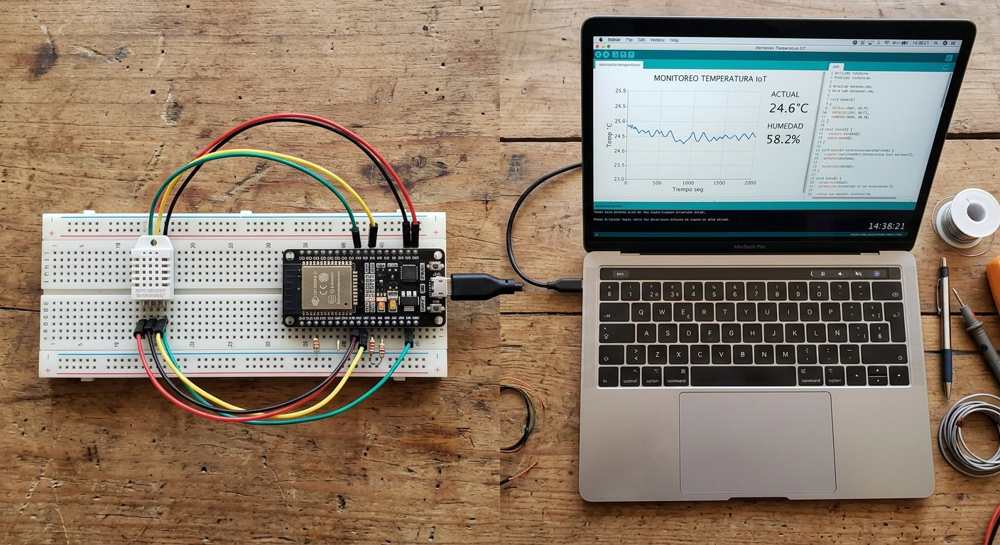

Qué cubre esta guía
Qué es ThingSpeak
ThingSpeak es una plataforma en la nube para el Internet de las Cosas que permite a tus dispositivos enviar datos, almacenarlos y visualizarlos en gráficos automáticos. En lugar de programar tu propia base de datos y página de gráficos, creas un canal, envías los datos y ThingSpeak hace el resto.
La unidad central es el canal: un espacio con hasta 8 campos donde guardar distintas variables. Por ejemplo, un canal de estación meteorológica podría tener la temperatura en el campo 1 y la humedad en el campo 2, y ThingSpeak generará un gráfico para cada uno.
Crear un canal y sus campos
- Crea una cuenta gratuita en ThingSpeak.
- Selecciona New Channel (nuevo canal).
- Asigna un nombre y habilita los campos (fields) que usarás, uno por variable: por ejemplo, campo 1 = temperatura, campo 2 = humedad.
- Guarda el canal y anota su Channel ID.
La organización en campos es la clave de un canal ordenado: cada magnitud en su campo, con nombres claros y unidades consistentes, para que los gráficos sean legibles desde el primer día.
API keys de escritura y lectura
- Write API Key: permite a tu ESP32 escribir datos en el canal. Es secreta: cualquiera que la tenga puede inyectar datos en tu canal, por lo que no debe publicarse.
- Read API Key: permite leer los datos desde otro programa o exportarlos.
Enviar datos por HTTP
ThingSpeak acepta los datos mediante una petición HTTP GET con la clave y los valores en la URL. El formato es:
GET https://api.thingspeak.com/update?api_key=TU_WRITE_KEY&field1=23.5&field2=60Cada fieldN corresponde a un campo del canal. El servidor responde con un número que indica si la escritura fue exitosa; el código puede revisarlo para confirmar que los datos llegaron bien.
Código ESP32 con WiFiClient
No necesitas una librería especial de ThingSpeak: la librería estándar del ESP32 basta para construir y enviar la petición HTTP. Este código lee un DHT22 y envía los valores cada 60 segundos:
#include <WiFi.h>
#include <DHT.h>
const char* SSID = "tu_red_wifi";
const char* PASS = "tu_clave_wifi";
const char* API_KEY = "TU_WRITE_API_KEY"; // clave de escritura
const char* HOST = "api.thingspeak.com";
#define PIN_DHT 4
#define TIPO_DHT DHT22
DHT sensor(PIN_DHT, TIPO_DHT);
const unsigned long INTERVALO = 60000UL; // envia cada 60 segundos
unsigned long ultimoEnvio = 0;
void setup() {
Serial.begin(115200);
sensor.begin();
WiFi.begin(SSID, PASS);
while (WiFi.status() != WL_CONNECTED) delay(500);
}
void enviarDatos(float temperatura, float humedad) {
WiFiClient cliente;
if (!cliente.connect(HOST, 80)) {
Serial.println("No se pudo conectar a ThingSpeak");
return;
}
String url = "/update?api_key=" + String(API_KEY) +
"&field1=" + String(temperatura) +
"&field2=" + String(humedad);
cliente.print("GET " + url + " HTTP/1.1\r\n");
cliente.print("Host: " + String(HOST) + "\r\n");
cliente.print("Connection: close\r\n\r\n");
delay(200);
while (cliente.available()) {
Serial.write(cliente.read()); // muestra la respuesta del servidor
}
cliente.stop();
}
void loop() {
unsigned long ahora = millis();
if (ahora - ultimoEnvio >= INTERVALO) {
ultimoEnvio = ahora;
float humedad = sensor.readHumidity();
float temperatura = sensor.readTemperature();
if (!isnan(humedad) && !isnan(temperatura)) {
enviarDatos(temperatura, humedad);
}
}
}El intervalo de 60 segundos es una buena práctica: respeta el límite del plan gratuito y es más que suficiente para variables ambientales que cambian lentamente.
Visualizar los gráficos
Al abrir tu canal en la web de ThingSpeak, cada campo muestra su gráfico automático con la evolución de la variable a lo largo del tiempo. Puedes:
- Seleccionar el rango de fechas a visualizar.
- Comparar varios campos en un mismo gráfico.
- Hacer públicos los gráficos para compartirlos con un enlace.
- Exportar los datos en CSV o JSON para analizarlos en una hoja de cálculo.
Para un proyecto de feria científica, exportar el CSV y procesarlo en una planilla (promedios, tendencias, comparaciones) le da el rigor que los jueces buscan.
Límites del plan gratuito
| Recurso | Límite gratuito aproximado |
|---|---|
| Frecuencia de escritura | ~1 actualización cada 15 segundos |
| Campos por canal | 8 |
| Canales por usuario | 4 (puede variar según la cuenta) |
| Retención de datos | Limitada (los planes de pago la amplían) |
Para la mayoría de los proyectos de aprendizaje y monitoreo casero, el plan gratuito es más que suficiente. Si tu proyecto crece y necesitas más frecuencia o más canales, evalúa los planes de pago o migra a una base de datos propia.
Proyecto: estación meteorológica en la nube
El proyecto integrador natural de esta guía es una estación meteorológica en la nube: un DHT22 que envía temperatura y humedad a ThingSpeak cada pocos minutos, generando un historial climático accesible desde cualquier lugar. Combina:
- El sensor DHT22 para medir temperatura y humedad.
- El envío por HTTP descrito en esta guía.
- La exportación en CSV para analizar la evolución diaria.
Si prefieres un panel con control en tiempo real en lugar de solo historial, complementa con Blynk; y si quieres un sistema totalmente propio, la guía de MQTT es el camino.
Conclusión
ThingSpeak elimina la parte más tediosa del IoT —guardar y graficar datos— y te deja concentrarte en lo que importa: medir bien. Con un canal, una API key y un ESP32 que envía por HTTP, tienes historial de datos en la nube en una tarde. Desde aquí, combina el registro con el riego automático para analizar cuánta agua usan tus plantas, o con la cámara ESP32-CAM para un sistema de vigilancia con registro.
Preguntas frecuentes
¿Qué es ThingSpeak y para qué sirve?
ThingSpeak es una plataforma en la nube para el Internet de las Cosas que permite a tus dispositivos enviar datos, almacenarlos y visualizarlos en gráficos automáticos. Cada "canal" tiene hasta 8 campos donde puedes guardar distintas variables (temperatura, humedad, distancia, etc.), y la plataforma genera los gráficos por ti sin que tengas que programar una página web ni una base de datos. Es la forma más rápida de tener historial de datos de tus sensores accesible desde cualquier lugar.
¿Qué son los campos y las API keys en ThingSpeak?
Los campos (fields) son las variables del canal: cada campo guarda una magnitud distinta, por ejemplo el campo 1 la temperatura y el campo 2 la humedad. Las API keys son claves de acceso: la clave de escritura (Write API Key) permite a tu ESP32 enviar datos al canal, y la clave de lectura (Read API Key) permite leerlos desde otro programa. La clave de escritura es secreta y no debe compartirse, porque cualquiera con ella podría escribir datos en tu canal; por eso no se publica en sitios ni repositorios.
¿Cómo envía datos un ESP32 a ThingSpeak?
El ESP32 envía los datos mediante una petición HTTP GET al servidor de ThingSpeak, incluyendo en la URL la clave de escritura y los valores de cada campo. La librería estándar de HTTP del ESP32 construye la URL con los parámetros y la envía por WiFi; ThingSpeak responde confirmando que guardó los datos. No se necesita una librería especial de ThingSpeak: con WiFiClient y una URL bien formada es suficiente, lo que además ayuda a entender qué ocurre por debajo.
¿Con qué frecuencia puedo enviar datos a ThingSpeak?
El plan gratuito de ThingSpeak limita el envío de datos a aproximadamente una actualización cada 15 segundos por canal. Para la mayoría de los sensores ambientales, esto es más que suficiente: la temperatura o la humedad no cambian tan rápido, y enviar cada 1 o 2 minutos es una frecuencia razonable que además ahorra ancho de banda y energía. Si envías datos más rápido de lo permitido, ThingSpeak simplemente los descarta, por lo que conviene respetar el intervalo con un temporizador en el código.
¿Puedo descargar mis datos de ThingSpeak?
Sí, ThingSpeak permite exportar los datos de un canal en formatos como CSV o JSON, ya sea desde la interfaz web o mediante la API de lectura. Esto es útil para analizar los datos en una hoja de cálculo, hacer gráficos propios o respaldar el historial. Para proyectos científicos o de feria, exportar el CSV y procesarlo en una planilla es una forma excelente de darle rigor al análisis, calculando promedios, tendencias y comparaciones a lo largo del tiempo.
Este artículo es contenido editorial independiente: no contiene ubicaciones patrocinadas ni enlaces de afiliado. Si en futuras actualizaciones se agregan enlaces a proveedores de componentes, serán identificados explícitamente. Los nombres de marcas y plataformas pertenecen a sus respectivos dueños; los límites del plan gratuito pueden variar. El código y las conexiones son referenciales y deben adaptarse y probarse con tu propio hardware. Si detectas un error en esta guía, por favor avísanos.
Sigue aprendiendo
Aplica el registro de datos al Sistema de Riego Automático para analizar el consumo de agua, o combínalo con Blynk para un panel en tiempo real.
Fuentes primarias y lecturas recomendadas
Referencias que sustentan los conceptos generales de la guía. La interfaz y los límites de la plataforma pueden variar.
- ThingSpeak — Plataforma IoT de MathWorks
- Documentación de ThingSpeak — Canales y API
- Arduino Reference — Librería WiFi
- Espressif — Documentación oficial del ESP32
Enlaces revisados: 13 de agosto de 2026.